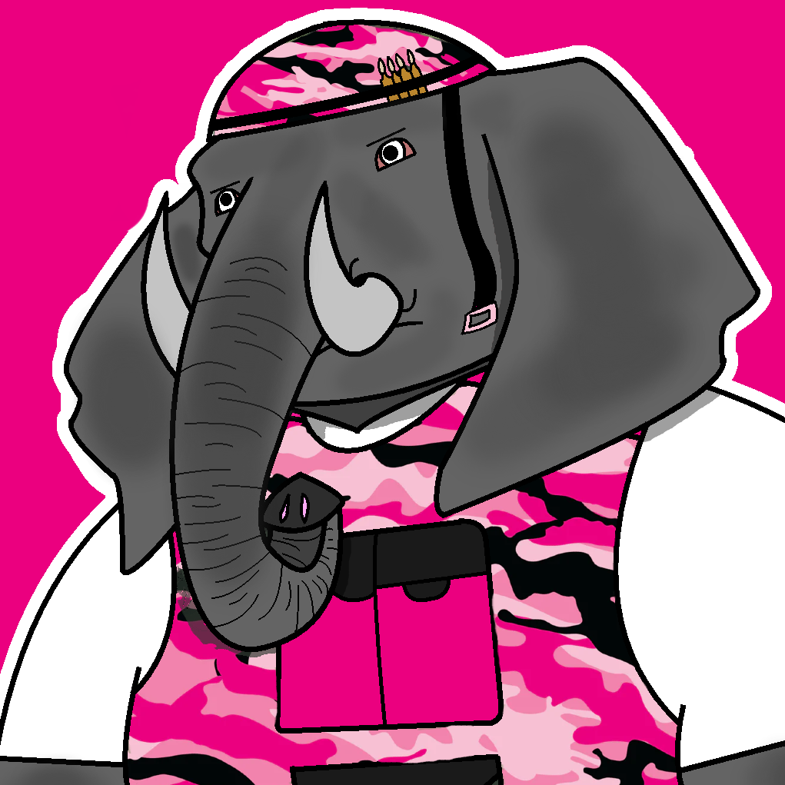
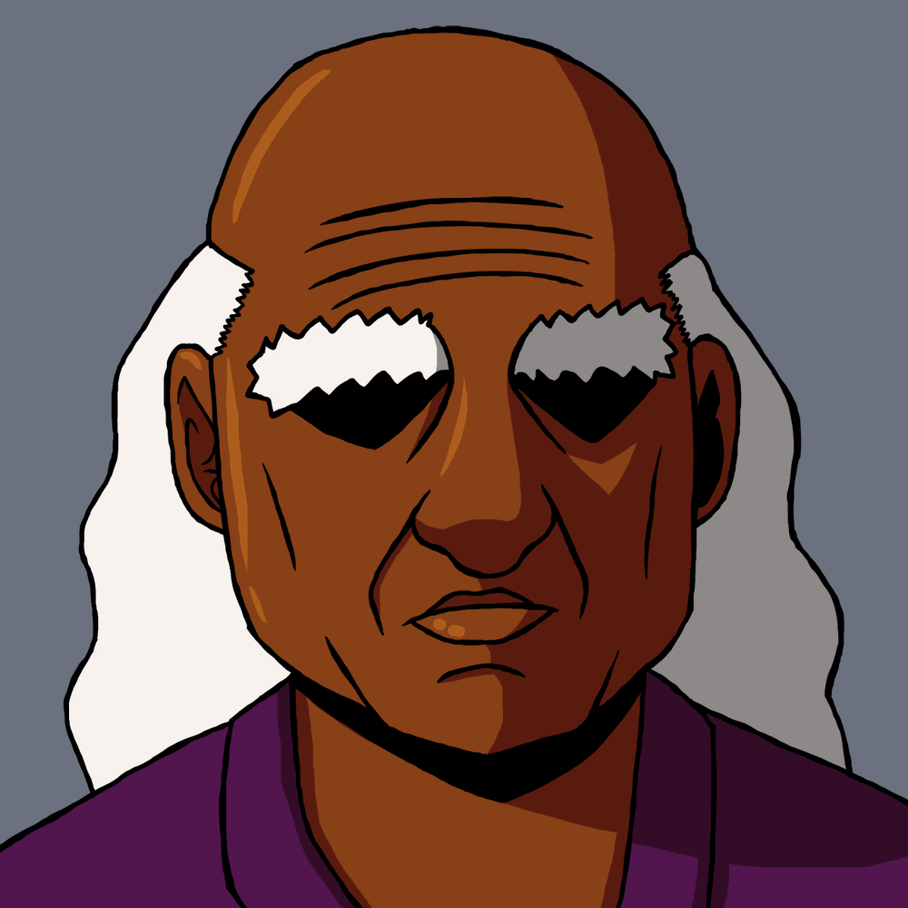

Knight Force
New Task Force

Arnold McNeil (aka The Monkey, aka Arnold_6_9_8)
A dwarf paladin that is always looking for a lady friend. He seems to flirt with any girl that he meets. Arnold seems to always try to lighten the mood with his antics, but underneath all of the tomfoolery is a heart of gold. He believes that everyone deserves a chance, and he's always looking out for the little guy. His fans call themselves the Arnoldnites. He's currently sponsored by a fitness company called Alpha Athletes. Arnold was a contestant on Hottest Star Island, and got 4th Place. Arnold dated Violet Bones for a time, but they parted ways after Violet was upset about how Arnold treated her on Hottest Star Island. Arnold is working as Wendy's right hand man. Arnold is now a Knight of Justice. Arnold was chosen by Gobo to be the leader of a New Task Force.
Billy
A nerdy student who visited The Cabin. He lost his girlfriend, Shauna, during The Cabin’s 2nd Incident, and decided to become a knight to help save people. Billy assisted the Task Force with capturing escaped criminals during the Loxo Rebellion War. Billy helped the Task Force rescue Gobo, and he assisted with the take down of Donna and Donovan Pink. Billy ended his friendship with Arnold due to Arnold dating Violet Bones. Arnold apologized to Billy, and their friendship was fixed. Billy joined Arnold's New Task Force.Knights of Justice

Oxford the Ox
The stalwart leader of the Knights of Justice. Oxford was the judge in Julian’s trial. He wanted to see the good in Julian, but was disgusted by his actions and decided to end Julian’s life.
Stuart the Rat
A strange man with the face of a rat. He was the prosecutor in Julian’s trial. He cares about the reputation of the Knight Force, and will go to extreme measures to protect it. He and Medusa dated for some time, but they broke up and Stuart is still very upset about it. Stuart can separate himself into four rats know as the Coalition of Rats. Stuart was defeated by the Task Force during the Gobo Rescue Operation, and Medusa took him to prison.
Medusa the Snake
An odd woman who acted as the bailiff in Julian’s trial. She seems to have taken a liking to Arnold for some reason. Medusa dated Stuart in the past, but she is now engaged to Donatello Green. Medusa helped the Task Force escape Don Green's Lab and managed to get Don Green into knight custody. Medusa wants the Task Force to attend her wedding with Don Green.
Ryu the Dragon
A dragonborn man who values his time. He arrested JB for his connection with Donald Blue. Ryu was a part of the Investigation Team along with Catherine. Ryu and Catherine manipulated the Task Force during the Gobo Rescue Operation in order to slow them down. The whereabouts of Ryu are currently unknown.
Catherine the Sheep
A morbid woman with sheep horns who enjoys killing. She speaks sheep. Catherine was on a team with Ryu. Catherine and Ryu manipulated the Task Force during the Gobo Rescue Operation in order to slow them down. The whereabouts of Catherine are currently unknown.
Fiver the Rabbit
A lonely gamer with rabbit ears who is a part of the Knight of Justice's assassination team. He was assigned to kill the Task Force members but they persuaded him to spare them. In exchange, the Task Force would have to join him in his gaming sessions. Fiver is online friends with Eileen and Mikey despite not knowing their real identities. Fiver trapped the Task Force in Golden Dark Online when they said that they didn't want to play games with him all the time. The Task Force managed to defeat Fiver, and he is now in knight custody. Fiver managed to get out of prison, however, Blondie and Nina managed to defeat him inside of the King's Castle during the Gobo Rescue Operation, and Nina returned him back to prison.
Akira the Monkey
A hyper woman who loves fighting. Akira has a very distinct accent and a pet dragon named, Bessy. She was partners with Rush. Akira was defeated by the Task Force during the Gobo Rescue Operation. The whereabouts of Akira are currently unknown.
Rush the Dog
A talking dog who is very loyal to his friends. Rush was a part of the Assault Team along with Akira. Rush was defeated by the Task Force during the Gobo Rescue Operation. The whereabouts of Rush are currently unknown.
Wilbur the Boar (aka XxswagsenatorxX)
A man with the face of a boar. He calls himself the "Swag Senator". He is a part of the Amabassador Team along with Tania.
Letania Winters (aka Tania the Tiger)
A fire genasi woman, and Letalia's cousin. She is partners with Wilbur. Tania harbors resentment towards Letalia and her father for being a part of the head family, while Tania's own family is one of the branch families.Other Knights

Joseph B (aka JB, aka Joseph the Boar)
The head of the King’s Secret Knight Task Force. He was once a powerful member of the Knights of Justice, but he lost his position after he protected Cyrus Winters from Donovan Pink's wrath. JB was beaten so badly that his body was severely weakened. He seeks to reform the city and remove the Dons from power. He loves all of the members of his Task Force, and wants to see them succeed. JB is was hospitalized after he had a heart attack due to the stress of the Task Force being arrested by Donovan Pink and his knights. Now, JB is retired from the Knight Force.
Chester
A somewhat apathetic Bronze Star Knight who was the proctor for the Task Force’s Bronze Assessment. Despite being somewhat standoffish, he was happy to see the Task Force pass the exam. After Gobo left the Task Force, Chester joined since Aphelios became the leader. Chester isn't much of a front-line guy; he prefers to play more a behind-the-scenes role. Chester did not like how the Task Force let Blondie kill Donovan. Chester left the Task Force and became a Consultant for Gobo.
Kenny (aka Kenny the Knight)
An arrogant knight who loved flexing his Silver Star Status. He was quite forgetful considering he forgot his own mother’s birthday…which is on Mother’s Day. Kenny was unfortunately found dead outside of the Frank Bevuchet Show Studio after being killed by Julian the Knight Hunter.
Nina (aka QUEENxN)
The captain of the Arnoldnites and a Silver Star Knight. She regularly plays Golden Dark Online. She went to Letalia's birthday party but only to meet Arnold in person. Arnold inspired her to become a knight. She's currently dating Chris.
Abraham Ab
The eldest sibling of the Ab Family and easily the meanest. He is always trying to start fights and bullies his youngest brother into coming along with his plans. He was unfortunately found dead at North Newtopia Hospital after being killed by Julian the Knight Hunter.
Abigail Ab
The middle child of the Ab Family and the only girl. She tried to cheat off of Letalia’s test in the Bronze Assessment and ended up getting her hair burned off. She is almost as jerkish as her brother. Abigail was a contestant on Hottest Star Island, and got 8th Place. Abigail is working on her book which talks about her experiences dealing with the death of her brother at the hands of the Knight Hunter.
Abel Ab
The youngest of the Ab Family and the least antagonistic. He tried to sell performance enhancers to the Task Force during the Bronze Assessment, but Aphelios took pity on him and didn’t snitch. He doesn’t really want to work with his siblings, but they’re his family, and the only people he has. Abel was a contestant on Hottest Star Island, and got 6th Place. Abel is working on his starting his rap career with his song, "Free Wyatt".Dons
Current Dons

Donte Red (aka Don Red)
A high-spirited cowboy who runs the local casino, and has big influence in the entertainment industry. He always has a big smile on his face, a symbol of his overwhelming confidence. He runs this town, and he knows it. He even has influence in the Knight Force as an honorary Gold Star Knight. Donte Red is one to always flex his power over the city. Some say his power is so strong it can cause his enemies to run away in fear. Don Red was best friends with Letalia's father, Cyrus Winters. Donte Red even babysat Letalia as a kid. Donte Red was also good friends with Doneisha Yellow. Donte is now dating Violet Bones.
Wendy Blue (aka Don Blue)
A young woman who works at the convenience store down the block. She also works at the local armory. She’s the daughter of Donald Blue, but she doesn’t have a great relationship with her father. However, she still cares about him dearly, and she is torn up over his recent incarceration. She has an adventurous-side, as she wants to be free from Donald's overbearing nature, but otherwise she’s a pretty down to earth girl. However, she does tend to be attracted to scumbags... Wendy became the new Don Blue after her father stepped down from the position due to the other Dons pressuring him to resign because of his incarceration. Wendy was a contestant on Hottest Star Island, and got 7th Place. Wendy became incredibly strong after training with Arnold. She possesses a Holy Brand that allows her to transfer energy from one person to another. Wendy formed a plan to take out Don Red with the help of Flat Top and Specs.
Flat Top (aka Don Green)
The young leader of the Society of Evil. He wants to change the society and make it a symbol of goodness after years of evilness. To him, being evil is oldschool and outdated. Flat Top is friends with Gobo, which is why they are working together to defeat the Dons. Flat Top was a contestant on Hottest Star Island, and got 3rd Place. During the game he formed an alliance with Aphelios called "Flat Peanuts". Flat Top was happy to see the amount of Society of Evil members increase after the exposure on Hottest Star Island. He's now working on merch for the Flat Peanuts brand. Flat Top became the new Don Green. Flat Top has an alliance with Wendy.

Aphelios Ross (aka The Rat, aka Don Pink, aka PeanutWarrior6)
A loxodon fighter who will always battle in the name of the law. Aphelios has a strong sense of justice and will not let anyone or anything get in the way of what he believes is right. Being a very large man and coming from the distant Loxa Land, means he is often an outsider wherever he goes. However, even in the face of discrimination, he wishes to do good and become a man of honor. He has a legion of fans called the Aphelios Ross Fanclub. He's currently sponsored by a shoe company called Rad Kicks. Aphelios wears size 15 shoes. Aphelios was a contestant on Hottest Star Island, and got 1st Place. Aphelios was the leader of the Task Force for awhile after Gobo left until Arnold and Letalia became Gold Star Knights. Aphelios is now Don Pink.
Letalia Winters (aka The Dragon, aka Don Yellow, aka Burning Rose)
A fire genasi druid with a fiery personality. Letalia is usually the calm and collected one of the group, but if you get on her bad side…get ready to buy a wig. She is an alumni of the prestigious Le Elegante Academy and a fashion enthusiast who enjoys browsing Goldengram. She even has her own fashion and food blog. Letalia works hard to live up to the high expectations set upon her. She has a group fans called the Letalia Love Brigade. She's currently sponsored by a fashion and modeling company called Elegant Designs. Letalia is actually a bit of a movie buff. Letalia was a contestant on Hottest Star Island, and got 2nd Place. Letalia is now a Knight of Justice.Previous Dons

Donald Blue
An emotional man who controled much of the real estate market in Newtopia City when he was a Don. He is the father of Wendy and cares about her greatly, causing him to be a bit overbearing. He is quite fond of the Task Force as they’ve done good work for him, and they have a good relationship with his daughter. Despite being one of the most powerful men in the entire city, he doesn’t have much of a backbone. Donald Blue was arrested by the Task Force after a gruesome battle. His Holy Brand ability is called Water Weaving, which gives him the power to use the water in his body as a weapon. Donald was in prison after being arrested by Don Pink and the Task Force, but he was released by Aphelios to help put an end to the jailbreak and the Loxo Rebellion. Donald is now under house arrest.
Donovan Pink
A menacing man who was the former Don Pink and is also the father of the current Don Pink, Donna. Donovan is considered by many to be the TRUE Don Pink, as his daughter, Donna, takes orders from him. Donovan is known for controlling the Knight Force with an iron fist, doing whatever is necessary to achieve justice. Donovan trained his oldest daughter, Blondie, before she ran away. It is believed that his Holy Brand ability makes it so that the damage that he inflicts on others cannot be healed through magical means. Donovan gave Cyrus a scar on his face, and he brutally beat JB. Donovan was upset that Donatello Green was allowed to live. Donovan tried to take over Newtopia, but his plans were foiled by the Task Force and friends. Donovan was killed by his daughter, Blondie.
Donatello Green
A doctor who controled many of the Hospitals in Newtopia City. He is dating Medusa, much to the dismay of her previous boyfriend, Stuart. Donatello helped Loxa Land by sending medical help there after the war in Loxa Land. Donatello worked together with the Loxo Rebellion to try to take over Newtopia City by turning everyone there into elephants, but his plans were foiled by the Task Force and his own fiancé, Medusa. He is currently in prison.
Donna Pink
A young prodigy who leads the Knight Force. She's a big fan of the Task Force after their recent appearance on the Frank Bevuchet Show. Despite being only 14, she is easily one of the most terrifyingly strong people in all of Newtopia City, and her potential for growth is even more frightening. Her father, Donovan, put her through brutal training, and even got Donatello Green to turn her into a super soldier. Her Holy Brand ability is called Lovely Guardian, which gives her the power to protect the people she loves by forming protective auras around them. Over time, Donna became more andmore subservient to her father; eventually leading to her joining Donovan in his attempt at overthrowing the king. She was defeated by the Task Force and is now in knight custody. Donna became Letalia's Assistant after Letalia became Don Yellow.
Doneisha Yellow
A beautiful woman who manages many of the schools in Newtopia City. She was friends with Donte Red and Cyrus Winters in the past. Doneisha believes that beauty, brains, and brawn are required for a person to be perfect; and she always strives for perfection. Doneisha is eternally young thanks to her Holy Brand ability that she got from the god of youth, Frigalhei. She manipulated everyone into believing that she and Cyrus had some sort of romantic relationship, but it was all apart of a game for her own entertainment. Don Yellow left Newtopia to go to the Mountains of Honor. She kidnapped young women and used them as sacrifices to her god in exchange for eternal youth. The whereabouts of Don Yellow are currently unknown.Royals

Gobo
An odd Gold Star Knight who claims to be the strongest fighter on the west side of the Brooks River. He is always trying to get stronger, and wishes to face powerful opponents. Unfortunately, he lost a push up contest with Arnold, running away from the gym in shame. After JB was hospitalized, Gobo was put in charge as the new leader of the Task Force. Gobo is a big fan of the movie, Night of the Living Poop. Gobo left the Task Force to take care of his father as his father became ill. After Gobo's father, the King of Newtopia, passed away, Gobo became the newest King of Newtopia. Gobo was nearly killed by Donna and Donovan Pink, but he was saved by the Task Force.
King
The revered King of Newtopia. He was very old and has trouble hearing, seeing, remembering, and well, honestly he had trouble doing everything except ordering people to be executed. The King unfortunately died due to old age, leaving his son, Gobo, to continue his legacy as the next King of Newtopia.Citizens

Chaddeus
The chaddest guy alive. He's the captain of the Letalia Love Brigade. He often goes to the local gym and is always testing his limits, which unfortunately causes him quite a few injuries…
Lucy
A dragonborn woman who worked with Mida selling fairy dust. She befriended Letalia, but was killed by the accidental discharge of Julian’s gun after Julian was tackled by Aphelios.
Mikey (aka sweet_tooth_237)
An aimless guy who works at a gas station and lives in a run down, rat infested apartment in the shady part of town. He once dated Wendy, but things ended between them as he didn’t want to pursue a long-term relationship with her. He hates Knights and any form of commitment. He’s not the kind of guy you’d want your daughter dating. He ended up being arrested when he shot Letalia after being surprised by her being in his apartment. After giving the Task Force information to help expose Donald Blue, his jail sentence was changed to house arrest. He became friends with Aphelios. Mikey is online friends with Eileen and Fiver, despite not knowing their real identities. Mikey had his sentence ended by Aphelios, and Mikey was allowed into the Knight Academy.
Alain
A local bartender who knows JB. He’s secretly a police informant who keeps tabs on what’s happening around Newtopia City.
Chet Ryan
A movie star who played in the hit movie, "Night of the Living Poop". He is cousins with the popular talk show host, Frank Bevuchet. He hosted the popular reality TV show, Hottest Star Island. He's working on a new movied called The Silence of the Rams with Donte Red and Letalia. Despite being a super popular and famous actor, in real life, he’s actually a bit of a jerk. His chin is quite impressive, though. Chet Ryan was quite saddened when his movie, The Silence of the Rams, flopped.
Frank Bevuchet
An insanely popular late night talk show host. He is cousins with the popular movie star, Chet Ryan. Frank is a super positive, upbeat, and fun guy; though he sometimes goes a little bit overboard to get the latest scoop.
Cheeta
A loxo girl who has a huge crush on Aphelios. She's even the captain of the Aphelios Fan Club! She's the little sister of the Wet Willy Killer, Cheeto. Despite originally wanting to kill Aphelios for arresting her brother, Cheeta chose a different outlook, and decided to thank Aphelios for giving her brother a chance at rehabilitation. Cheeta helped out Aphelios by giving him information on Jack Pepper. Cheeta became Aphelios' Assistant after he became Don Pink. Cheeta was appauled when Aphelios said he wanted Jack Pepper to be his Enforcer, but eventually she understood Aphelios' decision.
Ivanna
A young woman who is a big fan of Arnold. Ivanna seems to know Nina. Ivanna tried to get Arnold to go on a date with her in exchange for information, but he refused.

Master Wayne
Arnold's old master who lives at the peak of Mountain Lightning. He gave Arnold the Katana of Lightning, and taught him the Lightning Slash.Parents

Cliff Ross
A loxodon war hero from Loxa Land who is also Aphelios's father. He killed the Loxo army's leader, Carlos Pepper, ending the second Loxa Land War. However, Carlos's son, Jack Pepper, lived on to continue his father's legacy. Cliff is very strict and uptight. He believes soldiers should always be diligent and alert.
Heather Ross
A loxodon who is also Aphelios's mother. She's bubbly, nice, and she loves her family very much.
Cyrus Winters
A fire genasi ex-Knight who is also Letalia's father. Cyrus was once an ambitious young knight, but after it was discovered that he was investigating the Dons, Donovan Pink attacked Cyrus, leaving Cyrus with a noticeable scar on his face. Cyrus was saved from Donovan's attack by JB, but it cost JB dearly; which is something that Cyrus blames himself for to this day. Cyrus was once good friends with Doneisha Yellow and Donte Red, but he distanced himself from them once he realized they were becoming evil Dons. Cyrus can be a bit whimsical at times, but he's generally a thoughtful and caring person. He's always down to spend some cash, especially on his daughter and her friends. Cyrus helped out the Task Force during the Gobo Rescue Operation. Cyrus became Letalia's Enforcer after Letalia became Don Yellow. He offered to join her Don Crew, as he realized the best way to look after his daughter and make sure she doesn't go down the wrong path is to be right by her side.
Evelyn Winters
An air genasi ex-Knight who is also Letalia's mother. Evelyn often acts as the voice of reason in the family, given how problematic Letalia and Cyrus can be when they get heated. Evelyn helped out the Task Force during the Gobo Rescue Operation. Evelyn assisted during the Julian interrogation by using Greater Restoration to end the Modify Memory spell that was affecting him. Evelyn became Letalia's Consultant after Letalia became Don Yellow.
Ned McNeil
A dwarf ex-Knight who is also Arnold's father. Ned is very vulgar and always speaks his mind. Ned loves challenging his son to bouts of strength. Ned took the last name of his dead wife, Arnold's birth mother. Ned is now married to Arlina. Ned is the chief of Calvard, Arnold's Hometown.
Arlina McNeil
A water genasi stand-up comedian who is also Arnold's stepmother. Arlina is a nice person and she considers anyone who is a friend of her son to be her family. As such, she prefers that Arnold's friends call her "Mom".Students

Adan Ford
A stoner college student who hung out with Obi and Louisa. Unfortunately, he overdosed in his room after doing the fairy dust he got from Mida Bendo.
Obi Omar
A hobgoblin student who goes to Le Elegante, and a friend of the deceased Adan Ford. Obi and Adan got into a fight shortly before Adan’s passing, which left Obi feeling guilty. Obi is currently living in an apartment owned by Wendy Blue, where he enjoys hosting parties. Although, he isn't very prompt with paying rent.
Louisa
A friend of Adan who often smoked with him while skipping class. Louisa tried to help fight in the Loxo Rebellion War, but Aphelios wouldn't allow her to, as she was a civlian without combat training. Louisa works at the local game store.
Eileen B (aka ApheliosFanXD)
A college student at Le Elegante, and also JB's daughter. She's a big fan of the Task Force. She thinks Letalia is really brilliant. She thinks Arnold is very strong and cool. Eileen's favorite member of the Task Force is Aphelios Ross, which is apparent given that she is a member of the Aphelios Ross Fanclub. She was online friends with Fiver and Mikey, despite not knowing their real identities. Eileen, while polite and nice in public, is a bit of a jerk online. Eileen became Aphelios' Consultant after he became Don Pink. Eileen did not agree with Flat Top and Wendy's plan to take out Don Red.
Logan
A not-so-bright and not-so-lucky student who visited The Cabin. He had his groin stomped on by the Mother’s Day Maniac. He accidentally killed his friend, Martin, in The Cabin’s 2nd Incident, and is now in knight custody. He attempted to help the knights round up escaped criminals during the Loxo Rebellion War.
Martin
A serious student who visited The Cabin. He’s rather cold and logical, as he wanted to leave behind Shauna and Billy to save the remaining living students. Unfortunately, he met his end when he was pushed down the steps by Logan.
Shauna
A student who visited the Cabin. She was in a relationship with Billy, but she unfortunately died after running away from the Mother’s Day Maniac.The Society of Evil
35th Family

Chris (aka evilXKing)
The newest member of the 35th Family. He’s very socially awkward, a bit of a doormat, and not very good at recruiting people. However, he never gives up, and more than anything he wants to impress his superiors. He's currently dating Nina.
Specs
A member of the 35th Family. He became eternally invisible after eating a strange fruit called the “Invisi-Visi Fruit”.
Blondie (aka Doniella)
The leader of the 35th Family. She is confident and can be quite playful, especially with the other members of her Family. Blondie is actually the first-born daughter of Donovan Pink. Donovan put Blondie on a brutal training regimen while she was growing up, causing Blondie to eventually run away, but not before Donovan gave her a scar for lashing out at him. Blondie distrusts her sister, Donna Pink, as Blondie believes Donna is Donovan's loyal attack dog. Blondie killed her father during the Gobo Rescue Operation.Loxo Rebellion

Cheeto (aka The Wet Willy Killer)
A loxo guy who comes from Loxaland. His family came to Newtopia to find better opportunities after the war, but unfortunately, he was mistreated by his peers here as well. After years of consistent bullying, he snapped, and became the Wet Willy Killer, swearing revenge on those that tormented him. His calling card is giving his victims wet willies after death. He was arrested by the Task Force, but not before killing his final victim, Nadine Waters. Cheeto escaped from jail and was working with the Loxo Rebellion. He was arrested by the Task Force, again.
Jack Pepper
A loxo man who leads a secret rebellion to take down Newtopia and Loxo Land due to the way his people were mistreated in both places. He turned his men into super soldiers with the help of Don Green. He is currently in knight custody. Jack agreed to be a member of Aphelios' personal guard. Jack Pepper became Aphelios' Enforcer after Aphelios became Don Pink. Jack made Aphelios promise to go back to Loxa Land and set things right with the Loxos.
Jean Parma
A loxo super soldier who possesses incredible strength. He was betrayed by his ally Khan A. Meri, when Khan used a fireball to take down the Task Force while Jean was still in the range of the blast. After being knocked out by Khan's attack, Jean was taken to jail by Abel and Abigail Ab.
Khan A. Meri
A loxo super soldier who possesses great magical power. He has no issue harming his comrades to achieve his goals. Khan was taken to jail by Abel and Abigail Ab after being defeated by the Task Force.
Chili Cheese
A loxodon who caused a jailbreak, freeing tons of criminals. Chili Cheese was travelling with Cheeto and Wyatt. Chili Cheese was arrested by the Task Force.Villains

Julian D. Hotapepperin (aka The Knight Hunter)
An elf blood hunter with a warped sense of justice. Julian in most regards was a pretty alright dude. He was vegan and had a PhD in Applied Magical Arts. However, Julian’s downfall was his hotheadedness and his twisted beliefs of right and wrong. After killing a witness involved in a case and shooting his boss, JB, he ended up being sentenced to death, and he had his head sliced in two by Oxford the Ox. However, Julian was revealed to actually still be alive and working as the Knight Hunter, a serial killer who kills knights at night. Julian escaped from jail and is was helping out his friend, Mida. However, Fiver recaptured Julian and sent him back to prison. After being interrogated and having his memories restored, Julian revealed that he was revived by Doneisha.
Mida Bendo
A local drug dealer who sold fairy dust to support his family. While he appears gruff and mean on the outside, he’s willing to negotiate and be sensible. After being confronted by the Task Force, he gave himself up and spilled the beans on his drug operation. Julian promised to help Mida and potentially work out some sort of deal, but Julian's death stopped all further agreements. Mida escaped from jail and is now working with Julian to find Mida's family.
Countess Baroba
A woman who seeks to revive the god of youth, Frigalhei. She incapacitated Donald Blue's daughter, Wendy, and sought to use her as a sacrifice to perform her ritual to Frigalhei. She is very over the top and seems to have some connection to Donte Red. She helped Doneisha sacrifice women to the god, Frigalhei, in the Mountains of Honor.
Violet Bones
A college student who hatched various schemes along with her brother, Barry, to kill students who came to The Cabin. She managed to fool everyone into believing that it was her brother that forced her to help him kill people. She now works as a singer in the VIP section of Alain's bar. Violet released an album called "Murderous Intent". Violet was a contestant on Hottest Star Island, and got 5th Place. Violet dated Arnold for awhile, but they broke up after she was upset over how Arnold voted her off of Hottest Star Island. She made a diss track about Arnold called "Arnie You Suck". Violet is now dating Donte Red.
Barry Bones (aka The Mother's Day Maniac)
A very large man who has trouble talking. However, he makes up for his lack of communication skills with his overwhelming power and ferocity. He helped his sister kill a bunch of students on Mother’s Day a few years ago, earning him his moniker, The Mother’s Day Maniac. Barry escaped from jail and was trying to kill his sister Violet, for throwing him under the bus. However, Donald Blue and Chester managed to stop Barry and save Violet.
Wyatt
A young man who murdered his own cousin, Xavier, because Xavier stole his lunch money when they were in the second grade. Wyatt got help from his other cousin, Zeke, in disposing of the body. Wyatt escaped from jail with his friend Cheeto. Wyatt was accidentally killed by Arnold during the Loxo Rebellion War, as Wyatt was far too weak to withstand Arnold's attack.